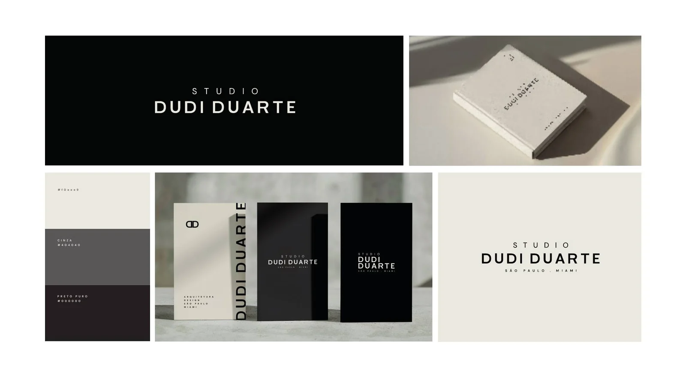
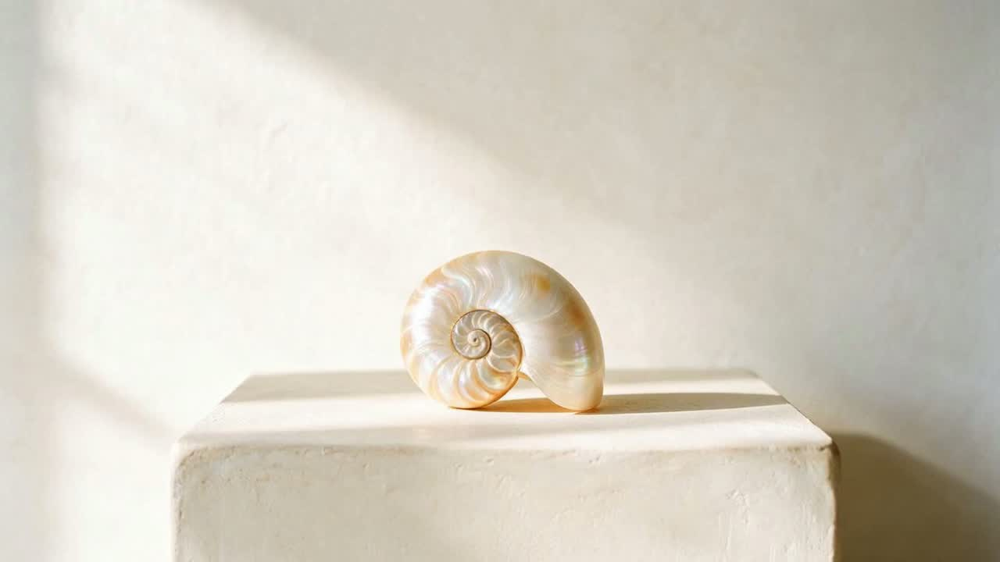
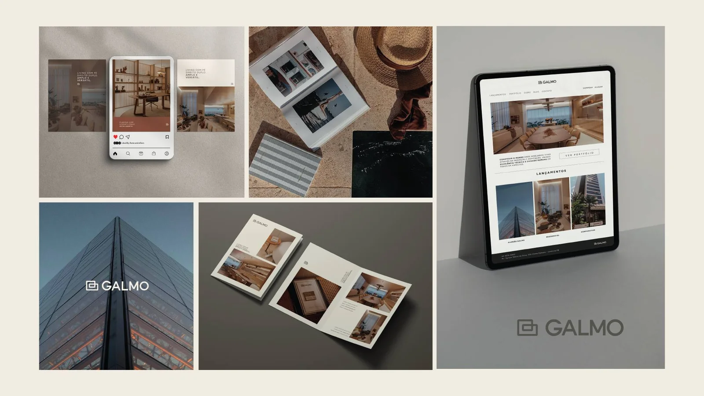
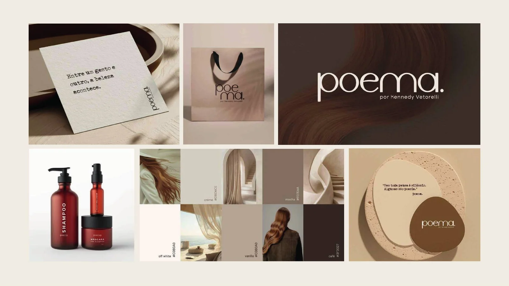
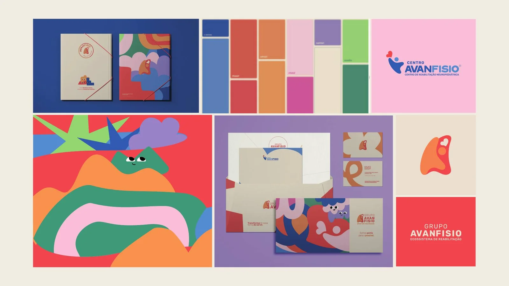
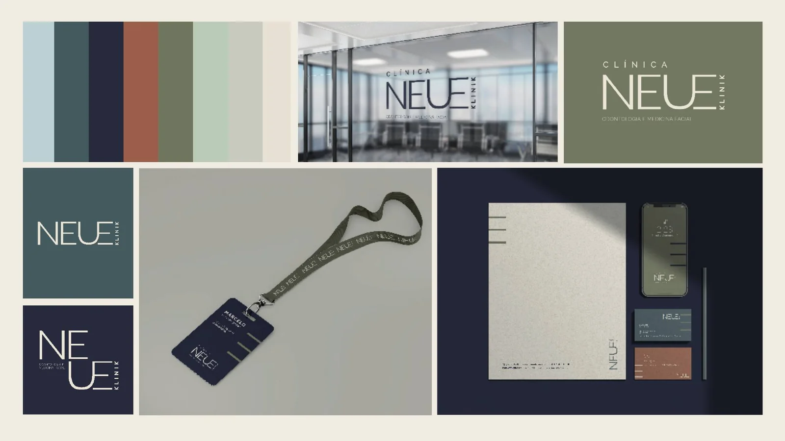
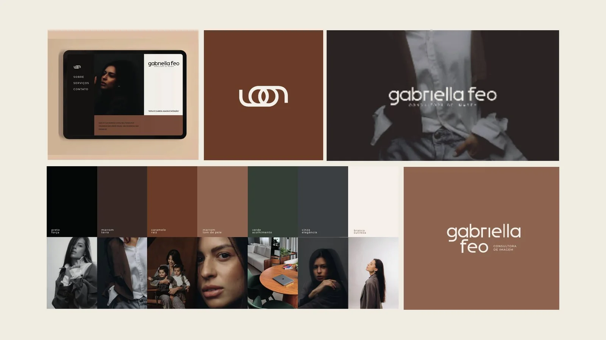
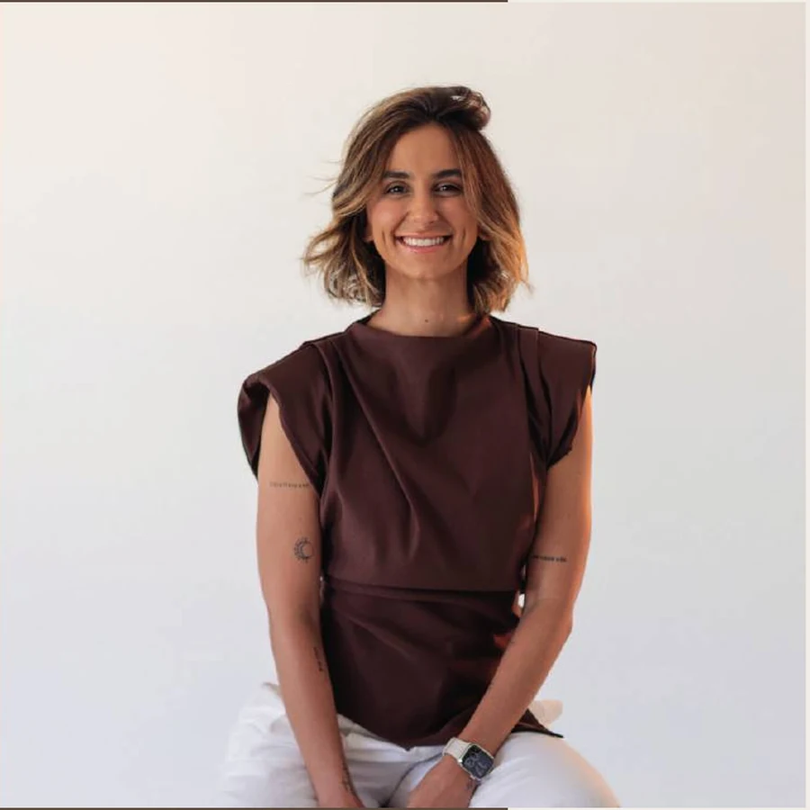

Arquitetura

Eu desenho a estrutura da sua identidade e coordeno a rede de parceiros que constrói tudo ao redor dela.
Estrutura antes
de estética.
Sem estrutura, o design não sustenta. E uma marca amadora derruba a percepção de um serviço de alto nível.
E ainda sobra pra você caçar designer, fotógrafo, tráfego e site, cada um puxando pra um lado, sem nenhuma coerência entre os pontos de contato.
Role para ver
Eu dirijo a criação e coordeno os parceiros certos pra cada etapa. Você acompanha uma marca inteira nascer sem gerenciar ninguém.
Antes do visual, eu entendo o que a sua marca é, onde está e pra onde precisa ir.
Desenho a estrutura e o visual, e defino o rumo pra cada ponto de contato falar a mesma língua.
Vídeo, site, tráfego, fotografia. Os parceiros vetados, coordenados por mim.
Cada projeto pede uma combinação própria de especialistas. A Concha reúne as pessoas certas sem perder a unidade do todo.
Projetos de criação, posicionamento e direção criativa conduzidos por Vanessa Balestri.

Arquitetura

Mercado imobiliário

Beleza e cosméticos

Saúde

Saúde

Consultoria de imagem

Diretora criativa da Concha. É por mim que cada marca começa.
Cabe a mim arquitetar o código genético do negócio, a estrutura que sustenta toda a identidade. A criação, a direção e a supervisão de cada ponto de contato partem de mim. A rede de parceiros executa sob essa direção. Meu trabalho é garantir o que sustenta uma marca antes dela aparecer.
O que a maioria pergunta antes de começar um projeto.
Me chama no WhatsApp e me conta o que você tá construindo.
Onde criatividade encontra propósito